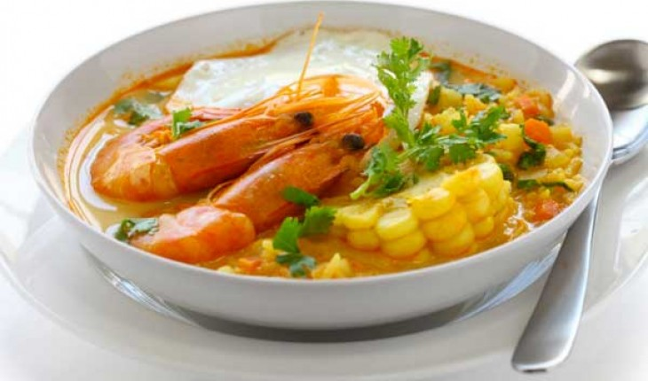

1. Chupe de camarones
Considerado uno de los platos bandera de nuestro país, esta sopa se consume en gran cantidad durante el invierno. Como es obvio, el camarón es el ingrediente principal del chupe, aunque su preparación también requiere de arroz blanco, papas amarillas, rocoto picado y leche evaporada. En muchos casos, también se le añade pescado en cubos, algo que sin dudas incrementa el poder energético de esta sopa.
El chupe de camarones es un plato típico de Arequipa, aunque también se prepara en otros rincones del Perú, como Piura. El pasaje de bus a Arequipa dura aproximadamente 15 horas. El pasaje cuesta tan solo 50 soles.

2. Aguadito de pollo
Otra sopa representativa de nuestra gastronomía es el célebre aguadito de pollo. Este plato integra el grupo de alimentos denominado “levantamuertos”, perfectos para recuperarte de la resaca.
Se prepara en base a ingredientes simples tales como piernas de pollo, ají amarillo molido, culantro licuado, arroz blanco, papas amarillas, etc., así que no dudes en intentar prepararlo en casa.
3. Sopa criolla
Si necesitas restaurar tu cuerpo tras una larga y entretenida noche, esta es la sopa ideal para ti. Sus ingredientes concentran la energía propicia para volver a sentirse activo. Entre ellos se encuentran: fideos cabello de ángel, leche evaporada y bistec en cubos.
Por supuesto, su preparación, que resulta sumamente sencilla, también incluye productos básicos de la cocina, tales como aceite, dientes de ajo picados y orégano. Todo esto se sumerge en una generosa porción de caldo de carne.